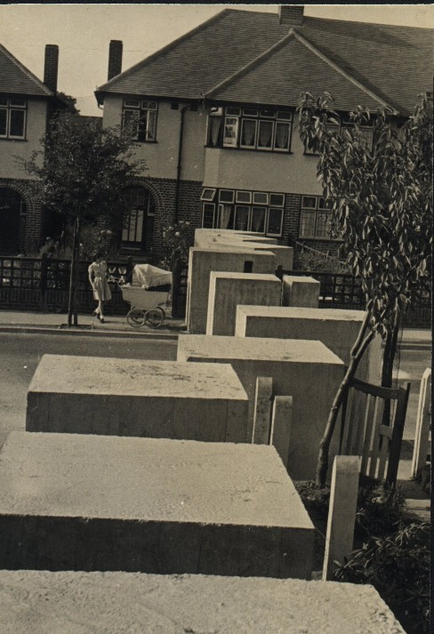
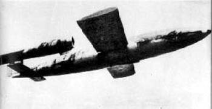

Memories of The War by Granddad
I had just started infant school when war broke out. After about two years
of not much happening at home the blitz started and we had daily bombing
raids. We lived exactly 12 miles from Central London and had six-foot high
concrete tank traps running through our front garden in case tanks
attempted to invade London.  When the air raid warning sounded the 'alert' we
didn't run immediately for cover, but carried on what we were doing with an
ear cocked for the sound of gunfire, or aircraft approaching. You could
hear the anti aircraft guns firing and knew the location of the guns, and
so could tell the progress of the air attack. We also recognised the
distinctive sounds of the different aircraft and could know without looking
whether it was one of theirs or one of ours. I still love the sound of a
Spitfire. Sometimes the German bombers flew over in formations of anything
up to a hundred, or more. A few of our fighters would tear into them, from
underneath usually, to avoid shooting downwards I suppose. We would stand
out in the garden and watch, usually standing by a wall or a tree, but not
near glass or in the open. The bombers just seemed to fly on towards London
while our planes shot at them. Sometimes they would have fighter escorting
them and dogfights would start and it was all the more interesting for
that! During the night when most attacks occurred, from West Wickham, where
we lived, you could hear the guns firing from Biggin Hill, Bromley and
Hayes. We would look out of our back bedroom window from where we could see
Crystal Palace and bits of London and watch the searchlights picking out
the aircraft and getting two or more of the searchlights together on an
aircraft. All the guns would do their best to shoot it down, but I don't
think they had a lot of luck. When our local ones started up it was time to
go downstairs and settle down between the piano and the front wall of our
house. Mum would play the piano and we would get off to sleep again. If our
Dad was home he would most likely go out on firewatching duty with who
ever's turn it was to patrol the road I can remember him calling up to our
bedroom and telling us to go back to bed, and it was raining bits of
shrapnel. In the morning, on the way to school we all used to collect
shrapnel, nose cones etc. and swap bits, some of which had quite artistic
shapes. The nose cones made good paperweights! Or fireside ornaments.
One morning we woke up, and a 500 lb bomb had dropped in Mr. Mc|Donald's
garden four doors down the road. He was a keen gardener and believed in
'dig for victory'. Well our bath was full of his carrots and potatoes, not
to mention glass stones and dirt and he didn't have a garden that year, and
we had no ceiling in the bathroom, toilet or back bedroom.. My brother's
pillow had a bit of bomb splinter clean through the place his head would
have been if we hadn't have gone downstairs that night. So he was, as my
father would have said.... "Better born lucky than rich!" If the warning
sounded, and I was less than halfway to school I would return home, or if I
was more than halfway I would carry on to school. However, the air raids
didn't occur often during the day so it didn't apply very often. In fact I
can only remember turning back once.
Later in the war, when the V1
(doodlebug) were coming over, one every 10 minutes or so, the air raid
siren didn't bother sounding. The doodlebug itself made such an
unforgettable racket you couldn't help knowing it was coming. All the time
you could hear it was OK. - It kept on going. Not very high. Probably less
than 1000 feet up. I remember one day about a quarter to nine, just setting
off for school and one was going over and it stopped. Wow! Such silence! I
could sense it falling and peddled back home for all I was worth but
realised I wouldn't get home. Only about 50 yards say, so I dumped my bike,
jumped over a garden wall and laid in the man's flowers close to the wall.
There was an almighty Thump! And a Woomph! All at the same time as all the
glass and all the curtains came outwards from all the windows that I could
see along the road. I remember seeing my mum's new net curtains which she
had dyed pale green, if you please, hanging down the outside of our bedroom
windows. That doodlebug landed in the school playing fields and hurt no
one. Most of them fell in open country I remember too! 
Click here to hear a Doodlebug A doodlebug took away
my Gran's house in Penge. She did a lot of baby sitting, and while she was
staying at my Auntie Win's at Sydenham SE21, a doodlebug dropped on the pub
adjoining her house at 151 Maple Road, Penge. After that she had no home,
but we still had her, and she used to stay with each of us in turn. There
are new blocks of flats there now I notice, as I do my visits to the places
I remember.